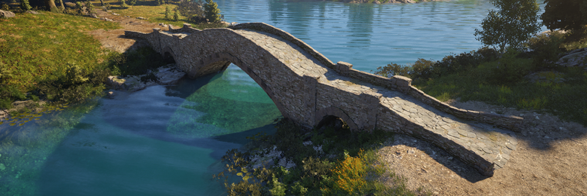
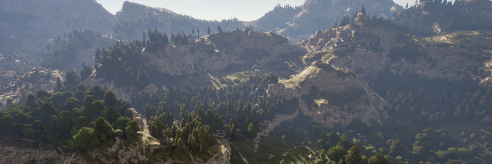

Pax Dei
Procedural world generation with Houdini - Foliage & environment asset scattering for 13 different biomes, the placement was done procedurally taking things like tree types and sizes, landscape formation, and other things into account, while still allowing artistic control where needed:
Procedural world generation with Houdini - Foliage & environment asset scattering for 13 different biomes, the placement was done procedurally taking things like tree types and sizes, landscape formation, and other things into account, while still allowing artistic control where needed:

Cliff overgrowth:
dynamic bridge placement:

Unreal PCG
Dynamic placement of small actors with splines, polygons, and data tables:
Dynamic placement of small actors with splines, polygons, and data tables:


Location based color variation
Foliage colors based on water vicinity, seasons, etc.
Foliage colors based on water vicinity, seasons, etc.

Unreal 5 developer tools
Some examples:
- World coordinate helper tool to find things and sharing coordinates in a large world
- Asset identification tool for quickly navigating to the asset in the browser
- Debug info viewer to see various information about the current location and to include them in bug reports.
- Various other blueprint & python tools.
Some examples:
- World coordinate helper tool to find things and sharing coordinates in a large world
- Asset identification tool for quickly navigating to the asset in the browser
- Debug info viewer to see various information about the current location and to include them in bug reports.
- Various other blueprint & python tools.


Landscape hlod system
A lightweight setup for baking out landscape hlods to increase the draw distance significantly, created because the builtin hlod system in the Unreal version at the time didn't work out with our level setup.
Houdini utility tools
- Various shelf tools and HDA's
- Asset batch processing tools
user-friendly materials
Created a user-friendly material pipeline for the foliage that works in a hierarchical way, allowing artists to only need to set meaningful variables once instead of having to copy-paste the same settings to multiple materials.
root deformation
Shader-based deformation for tree roots, so they follow the landscape even on steep hills.
A lightweight setup for baking out landscape hlods to increase the draw distance significantly, created because the builtin hlod system in the Unreal version at the time didn't work out with our level setup.
Houdini utility tools
- Various shelf tools and HDA's
- Asset batch processing tools
user-friendly materials
Created a user-friendly material pipeline for the foliage that works in a hierarchical way, allowing artists to only need to set meaningful variables once instead of having to copy-paste the same settings to multiple materials.
root deformation
Shader-based deformation for tree roots, so they follow the landscape even on steep hills.
Foliage impostors with accurate lighting
This was pre-nanite stuff, but created a system that bakes out more convincing looking tree impostors that react to the lighting more accurately than just the standard mesh cards.
